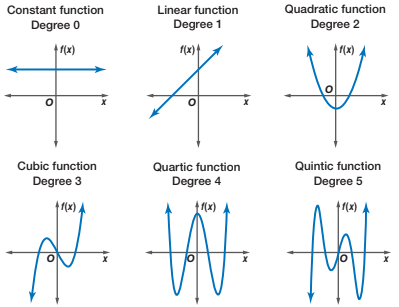

Polynomial Regression ▶️
MATH 4780/MSSC 5780 Regression Analysis
Why Polynomial Regression
- Polynomials are widely used in situations where the response surface is curvilinear.
- Many complex nonlinear relationships can be adequately modeled by polynomials over reasonably small ranges of the \(x\)’s.

Important Considerations
Extrapolation
- Can be extremely dangerous when the model is higher-order polynomial.
- The nature of the true underlying relationship may change or be completely different from the system that produced the data used to fit the model.

Hardwood Data (LRA Example 7.1)
- Strength of kraft paper vs. the percentage of hardwood in the batch of pulp from which the paper was produced.
- A quadratic model may adequately describe the relationship between tensile strength and hardwood concentration.

U.S. Birth Rate from 1917 to 2003

A Polynomial Regression Provide a Poor Fit


Piecewise Polynomials: 3 knots at 1936, 60, 78

Any issue of piecewise polynomials?
Linear Splines
- Use
bs()function in the splines package.

Cubic Splines
- The cubic spline is a spline of degree 3 with first 2 derivatives are continuous at the knots.

Multiple Predictors: Linear Terms with Interaction
\[ E(Y \mid X_1, X_2) = \beta_0 + \beta_1X_1 + \beta_2X_2 +\beta_3X_1X_2\]
The slices of the surface in the direction of each predictor, holding the other constant, are linear.
\(\small \dfrac{\partial E(Y \mid X_1, X_2)}{\partial X_1} = 1 - 3X_2\)
\(\small \dfrac{\partial E(Y \mid X_1, X_2)}{\partial X_2} = 2 - 3X_1\)
The slope of the relationship between \(Y\) and \(X_1\) is different at different level of \(X_2\), but at each level of \(X_2\), the relationship is linear.

Multiple Predictors: Quadratic Terms Without Interaction
\[ E(Y \mid X_1, X_2) = \beta_0 + \beta_1X_1 + \beta_2X_2 +\beta_3X_1^2 + \beta_4X_2^2\]
The quadratic partial relationship between \(Y\) and each of the regressors is invariant across the levels of the other regressor.
\(\small \dfrac{\partial E(Y \mid X_1, X_2)}{\partial X_1} = 2 + 6X_1\)
\(\small \dfrac{\partial E(Y \mid X_1, X_2)}{\partial X_2} = 1 + 3X_2\)

Multiple Predictors: Full Quadratic Model with Interaction
\[ E(Y \mid X_1, X_2) = \beta_0 + \beta_1X_1 + \beta_2X_2 +\beta_3X_1^2 + \beta_4X_2^2 + \beta_5X_1X_2\]
The slope of the partial relationship between \(Y\) and \(X_1\) depends not only on the level of \(X_1\) but also on the specific value at which \(X_2\) is held constant.
The shape of the partial relationship between \(Y\) and \(X_1\) is quadratic, fixing the value of \(X_2\).
\(\small \dfrac{\partial E(Y \mid X_1, X_2)}{\partial X_1} = 3 + 10X_1-6X_2\)
\(\small \dfrac{\partial E(Y \mid X_1, X_2)}{\partial X_2} = 1 + 16X_2-6X_1\)